Phase I
Our preliminary idea was to utilize a kinetic sculpture to visualizing sound in order to communicate the amount of sound pollution that we input into our environment. We wanted to our audience not to only acknowledge their physical imprint they leave on the world, but also the noise imprint they leave behind. We also researched other design precedents to learn how other designers utilized kinetic sculpture as a medium for communication.
- Barkow & Leibinger’s Kinetic wall
- Joyce Lin’s Tidal
- Shapeshifter
- Triple Helix
Our insights from the design precedents:
- Using reverse engineering, we learnt how to simple mechanism can create powerful and fluid movement with various types of materials such as cloth, wood, string, and metal.
- Learn how to take a simple form and transform them into dynamic and sophisticated forms.
We were also influenced and inspired by the mechanics of the weaving machines, and the use of threads as the main component for our sculpture. Through research, experimentation, prototyping, we found the use of lightweight material affords a fluid and flowy movement of our kinetic sculpture. We were also inspired and interested in the organic motions.


Phase II
From the feedback that our group received from phase one, we decided to do more form and material exploration. We purchased different fabrics and experimented with how they respond when cams or imprints are being pushed underneath. During experimentation, we realized when the cams are exerting force upwards against the lines of threads, the cam would push the threads apart and create a gap in the lines of threads. This resulted us to switch the main material from threads to white cotton cloth. To further refine and explore the different types of mechanics that would afford our desired kinetic movement, we builded a 3D digital prototype using Solidworks 2011. This process to help us to finalized our mechanics, which is a 5 crankshaft system in each section. Finally, we proceeded to build physical prototype in Solidspace. To build the frame and the crankshaft system of the kinetic sculpture, we decided to use ⅛ ‘’ mdf board, which is a suitable and affordable material for laser cutting.
What didn’t work:
- Lacking stability
- Not efficient design to connect three sections
- Section needed to rotate independently of each other
- Not strong of a concept
- Not a dynamic and organic form
- Difficult to implement realistically


 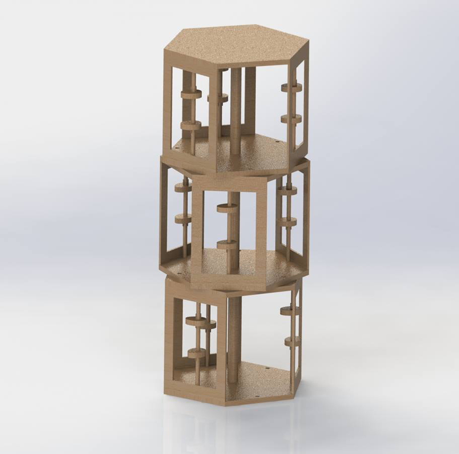
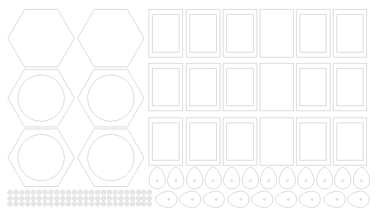
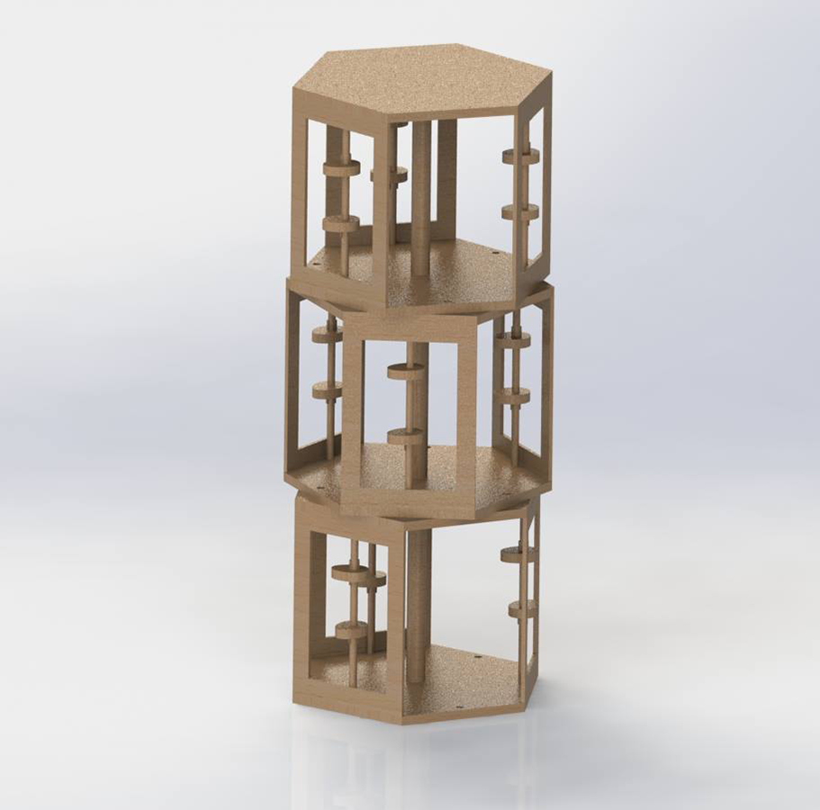
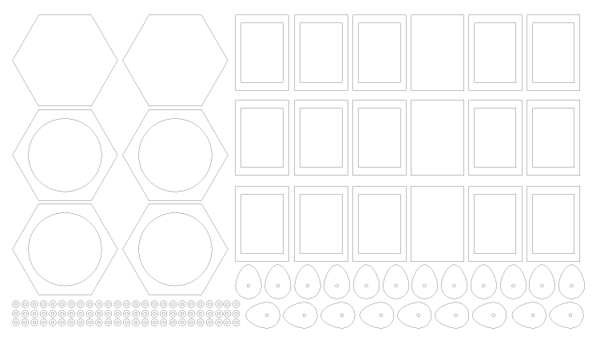
Phase III
In order to communicate our concept efficiently to our targeted audience, we had to further refine our form. Thus, we began re-ideating the possible forms, and researched deeper within the domain of noise pollution. This resulted two medium fidelity prototypes that were build using ⅛ inch mdf board: one form that mimics the fundamental representation of sound, which is cosine and sine waves, and another form that was inspired by airplane engine motors. One of the most well known source of noise pollution is aircraft noise that is caused by it’s engine motor. Therefore, the irony within this design is that it mimics the form of engine motor, which dangerous for the ear, but it shows you the levels and source of sound that are dangerous to your ears. This process completely overhaul every design decisions we made previously, and frame undergone various of changes to achieving physical and functional aesthetics.
We decided to use frosted acrylic to diffuses the light from our RGB Leds, and ⅛ inch mdf to build the frame. Along the way we began to program in behaviour that it would respond to the sound in its environment using two arduino, 8 microphones, and 16 RGB LEDs.
Materials:
- ⅛ inch mdf board
- .3175 cm wooden rod
- 8 RGB LEDs
- 16 blue LEDs
- 8 electric microphone amplifier MAX4466
- 1 parallax continuous motor
- 2 arduino uno
- 2 mini breadboard
Challenges
- The weight of each section caused it to be hard to rotate
- Controlling 16 LEDs by taking different inputs from 8 microphones
- Manipulating degree of turns for 360 motors using 8 microphones


 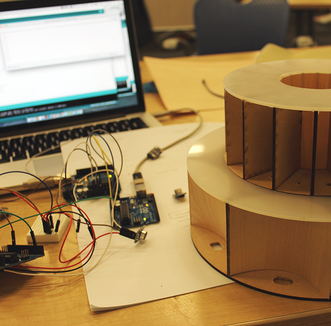
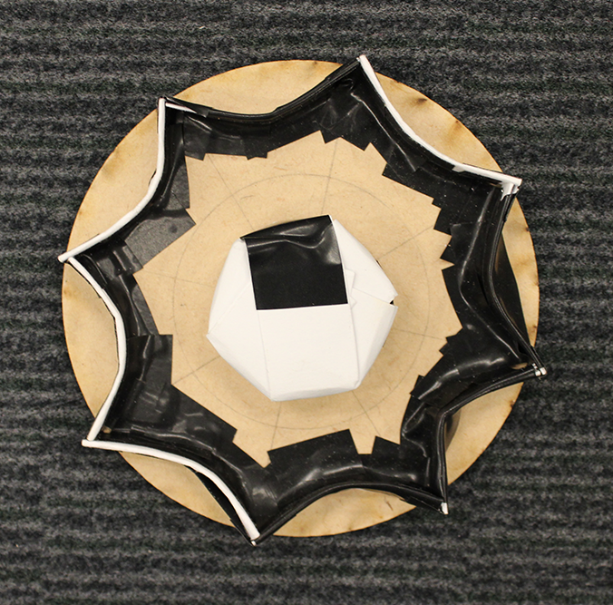
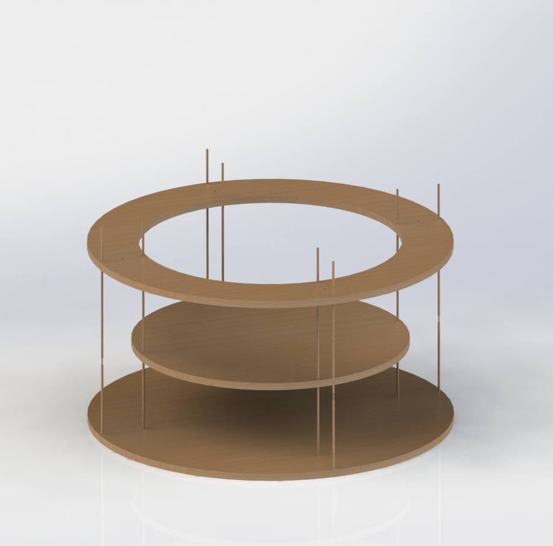
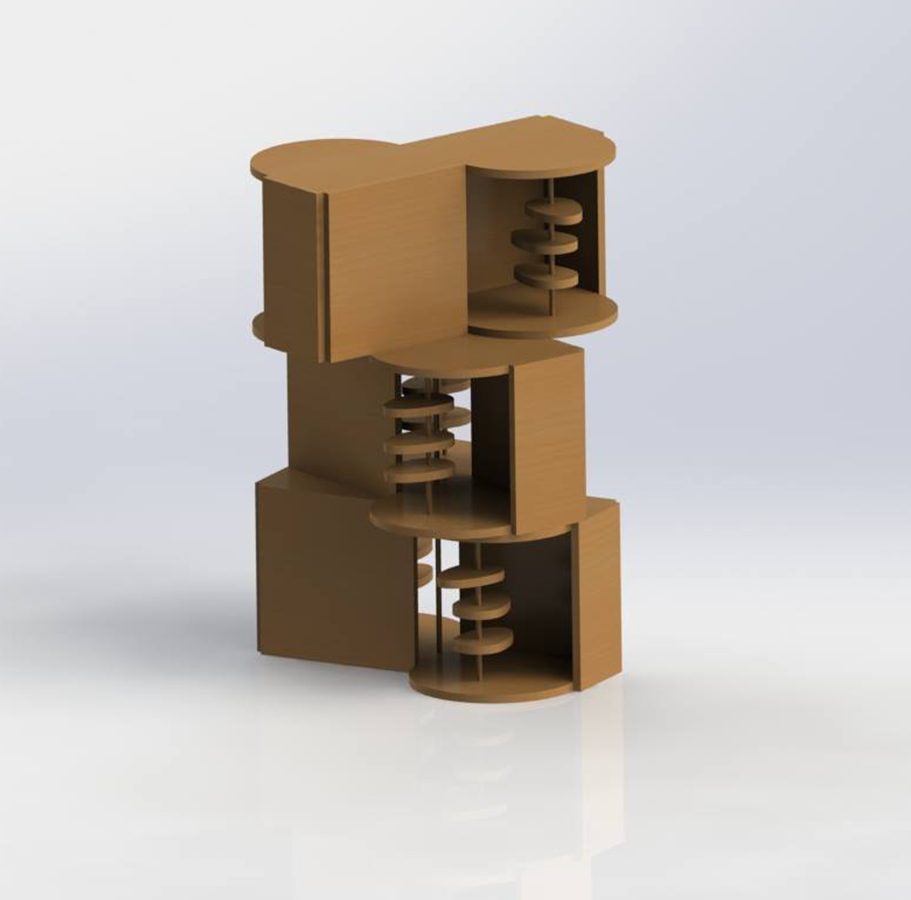
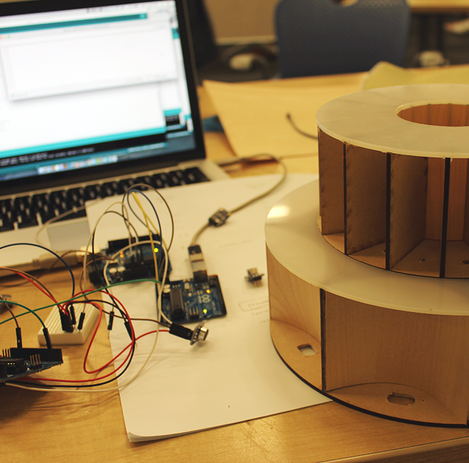
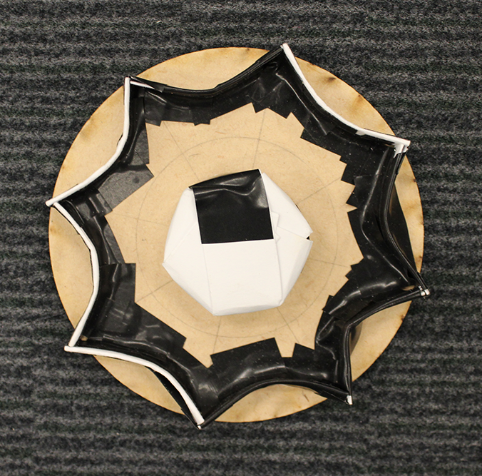
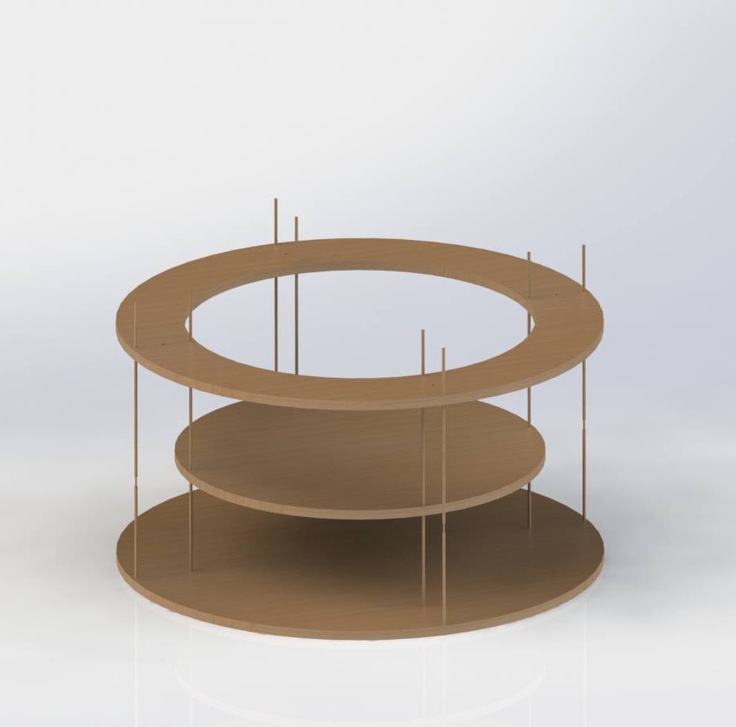
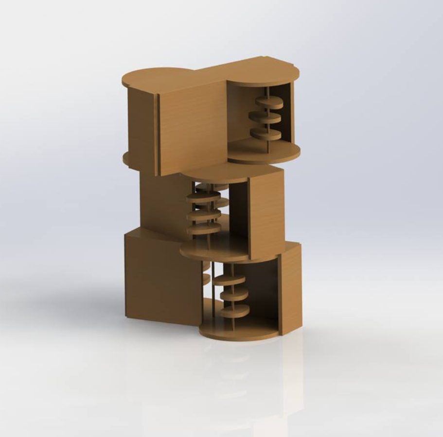